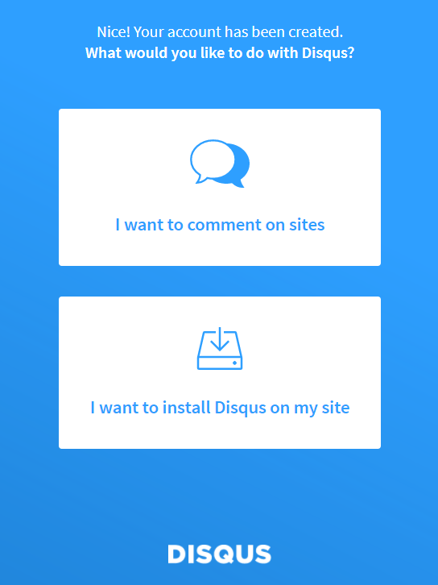
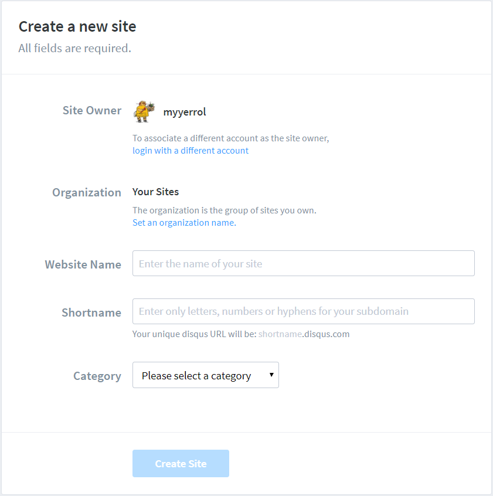
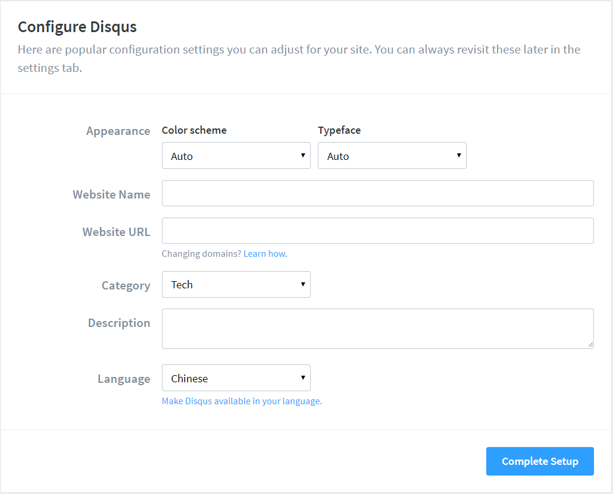

前言
我之前在选择自己博客网站主题的时候曾浏览过Hexo主题网站，发现Hexo官方提供了不少各具特色的主题。后来为了进一步确定到底使用哪个主题，我又仔细地参考了知乎上有关Hexo主题推荐的文章。总之，在一段长时间的纠结和考虑之后，我最终决定放弃参考别人的想法而是遵循自己内心的感觉，选择了一个叫Freemind的主题。
Freemind主题虽然不是Hexo里面排名前十或在推荐里面出现次数较多的主题，但它的那种简约而又专业的风格令我十分喜欢。接下来，我会简要地介绍Freemind主题的特点和安装步骤，并重点地讲解它的配置方法。当然了，Hexo主题的配置基本上大同小异，只要学会了其中一种主题的配置方法，其他的就可以触类旁通了。
特点
Freemind主题是由Joe所编写的，它拥有以下几个特点：
双列布局
使用最传统和舒适的博客布局。
标签插件
基于hexo-tag-bootstrap编写了功能丰富的标签插件，可以最大程度地发挥Bootstrap的能力。其中包括：
- 可以插入一段带有特殊颜色标记的文本。
- 可以插入一个按钮，并为其指定超链接、文本和颜色。
- 可以插入一个标签，并为其指定文本和形式。
- 可以插入一个徽章，并为其指定文本。
- 可以插入一段文本信息，并为其指定不同的样式。
主题颜色
Freemind主题内置了十几种颜色，可以通过配置进行修改。
本地搜索
基于hexo-generator-search实现了一个支持实时预览的本地搜索引擎。
安装
安装Freemind主题
1 2
| $> cd your_blog $> git clone https://github.com/wzpan/hexo-theme-freemind.git themes/freemind
|
1
| $> npm install hexo-tag-bootstrap --save
|
1
| $> npm install hexo-generator-search --save
|
目录
Hexo目录
1 2 3 4 5 6 7 8 9 10 11 12 13 14 15 16 17 18 19 20 21 22 23 24
| |__ .deploy_git/ |__ .git/ |__ .gitignore |__ _config.yaml |__ LICENSE |__ node_modules/ |__ package.json |__ public/ |__ README.md |__ scaffolds | |__ draft.md | |__ freemind.md | |__ page.md | |__ post.md |__ setup.sh |__ source | |__ _posts/ | |__ about/ | |__ categories/ | |__ images/ | |__ tags/ |__ themes | |__ freemind/ | |__ landscape/
|
.deploy_git(不被Git管理):
存放远程博客网站的全部内容。
.git(不被Git管理):
Git的核心功能目录。
.gitignore:
Git的忽略文件，用于忽略某些文件的版本管理。
_config.yaml:
博客网站的配置文件，里面包含了配置过程中的大部分参数。
db.json(不被Git管理):
在博客网站的中间数据库文件。
LICENSE:
仓库使用的开源版本协议。
node_modules:
博客网站开发所需要或依赖的Node.js模块。
package.json:
记录Hexo以及各种插件版本信息的文件。
public(不被Git管理):
存放生成的博客网站的全部内容。
README.md:
仓库的使用介绍。
scaffolds:
模板文件夹，用来创建不同风格的文章。
setup.sh:
安装Hexo插件的脚本文件。
source:
存放用户资源的文件夹，里面一般文章和图片等。
themes:
主题文件夹，Hexo会根据主题来生成相应的静态博客网站。
Freemind目录
1 2 3 4 5 6 7
| |__ .gitignore |__ _config.yaml |__ languages/ |__ layout/ |__ LICENSE |__ README.md |__ source/
|
启用
修改Hexo根目录下_config.yaml文件中的theme选项为freemind来启用该主题。
配置
首页摘要
在网站首页，文章中的内容默认是全部展开的。你可以通过在文章中添加如下标签，来显示该标签以前文章中的所有内容（通过在文章相应位置插入一个阅读全文的按钮来实现），这样做可以让网站首页看起来较为简洁并且突出了每个文章的重点。
标题页面
Freemind预先已经定义了分类、标签和关于页面的排版和布局，但是要想让它们显示出来，就需要自己手动在博客网站的source目录中添加相应的页面。
例如，为了能让分类页面可以在鼠标点击之后显示出来，你需要在source/categories/目录下创建一个index.md文件，其中的内容如下：
1 2 3 4
| --- title: 分类 layout: categories ---
|
标签页面的内容与上面类似，具体内容如下：
1 2 3 4
| --- title: 标签 layout: tags ---
|
最后关于页面中的内容如下：
1 2 3 4
| --- title: 关于 layout: page ---
|
为了能使用Markdown语法来对关于页面中的内容进行编写，我将原本官方教程中需要创建的index.html文件修改为了index.md，经过测试，两者显示效果相同。
文章模板
布局
1
| default_layout: freemind
|
上面的配置（存在于_config.yaml文件中）修改了文章的默认布局，可以在终端里使用如下的命令来简化：
而不需要
1
| $> hexo new freemind "article"
|
模板
因为Freemind主题在Hexo的基础之上，额外提供了一些新的front-matter选项，所以我创建了这个freemind布局（scaffolds/freemind.md）来更好地装饰整篇文章。以下是其中的具体内容：
1 2 3 4 5 6 7 8 9 10 11 12 13 14
| --- title: {{ title }} date: {{ date }} tags: categories: description: feature: false toc: true comments: true --- {% alert info %} 普通个人转载请注明出处。获得许可后，要求转载时保留注明出处和网站链接，谢谢！ {% endalert %}
|
title:
文章的标题，由创建文章命令中的title自动写入，可以手动修改。
date:
文章的创建日期，由创建文章命令时的系统时间自动写入，可以手动修改。
tags:
文章的标签，用于在博客网站首页的标签页里进行显示，可以添加多个。
categories:
文章的分类，用于在博客网站首页的分类页里进行显示。
description:（新）
文章的描述，用于在文章顶部插入一段简短的摘要信息。
feature:（新）
文章的特征图，用于在博客网站首页的文章列表中进行显示。
toc:（新）
文章的目录，用于显示文章的目录层级。
comments:
文章的评论，用于留言和交流。
评论系统
1 2
| disqus_shortname: myyerrol
|
因为多说已经关闭，所以我使用Disqus来取代其做博客的评论系统，上面需要填写的是注册Disqus时所指定的ID。具体的操作步骤如下：
1. 注册或登录Disqus
打开Disqus主页，可以看到，Disqus 支持 Facebook，Twitter以及 Google 登录，当然也可以用邮箱注册一个账号，如果是注册的账号，需要验证一下邮箱。
2. 配置Disqus
登陆后，在Disqus主页选择GET STARTED按钮，会出现如下界面：

选择I want to install Disqus on my site选项后，接着会出现下面的界面：

Website Name:
你的网站名字，可以随便起，但最好和你的网站相关。
Shortname:
这个就是上面Hexo配置中的disqus_shortname，要求全网唯一，设定之后不可改变。推荐使用你的英文名来当做Shortname。
Category:
这个是站点的种类，你可以根据自己的实际情况来进行选择。
在填写完上面的内容之后，点击Create Site，等待页面的跳转。接下来在页面的左侧点击Configure Disqus

Website Name:
自动从上面创建站点的步骤中读取，不需要手填。
Website URL:
自己博客网站的地址，需要如实填写。
Category:
自动从上面创建站点的步骤中读取，不需要手填。
Description:
网站的描述，可以不写。
Language:
Disqus显示在网站中的语言，根据自己的实际情况来选择，一般选择Chinese或English。
配置完以上内容后，点击Complete Setup完成Disqus的配置。
3. 配置Hexo
最后，在_config.yaml文件中将disqus_shortname填写为上面Disqus创建的Shortname就可以了。
Disqus评论系统需要翻墙才可以访问，而且在留言之前要先登录个人账户。
配置文件
Hexo
我的Hexo配置文件（_config.yaml）内容如下：
1 2 3 4 5 6 7 8 9 10 11 12 13 14 15 16 17 18 19 20 21 22 23 24 25 26 27 28 29 30 31 32 33 34 35 36 37 38 39 40 41 42 43 44 45 46 47 48 49 50 51 52 53 54 55 56 57 58 59 60 61 62 63 64 65 66 67 68 69 70 71 72 73 74 75 76 77
| title: Home | myyerrol's blog subtitle: Home | myyerrol's blog description: "This is my personal website, which uses the hexo system to build. Enter the following URL to access: https://myyerrol.github.io" author: myyerrol language: zh-cn timezone: url: http://yoursite.com root: / permalink: :lang/:year/:month/:day/:title/ permalink_defaults: lang: zh-cn source_dir: source public_dir: public tag_dir: tags archive_dir: archives category_dir: categories code_dir: downloads/code i18n_dir: :lang skip_render: new_post_name: :lang/:year-:month-:day-:title.md default_layout: freemind titlecase: false external_link: true filename_case: 0 render_drafts: false post_asset_folder: false relative_link: false future: true highlight: enable: true line_number: true auto_detect: false tab_replace: true default_category: uncategorized category_map: tag_map: date_format: YYYY-MM-DD time_format: HH:mm:ss per_page: 10 pagination_dir: page theme: freemind deploy: type: git repo: git@github.com:myyerrol/myyerrol.github.io.git branch: master disqus_shortname: myyerrol
|
Freemind
我的Freemind主题配置文件（themes/freemind/_config.yaml）如下：
1 2 3 4 5 6 7 8 9 10 11 12 13 14 15 16 17 18 19 20 21 22 23 24 25 26 27 28 29 30 31 32 33 34 35 36 37 38 39 40 41 42 43 44 45 46 47 48 49 50 51 52 53 54 55 56 57 58 59 60 61 62 63 64 65 66 67 68 69 70 71 72 73 74 75 76 77 78 79 80 81 82 83 84 85 86 87 88 89 90 91 92 93 94 95 96 97 98 99 100 101 102 103
| slogan: "Hacking means exploring the limits of what is possible, in a spirit of playful cleverness." theme: bootstrap inverse: true menu: - title: 归档 url: archives intro: "所有的文章。" icon: "fa fa-archive" - title: 分类 url: categories intro: "所有的分类。" icon: "fa fa-folder" - title: 标签 url: tags intro: "所有的标签。" icon: "fa fa-tags" - title: 关于 url: about intro: "关于。" icon: "fa fa-user" links: - title: "myyerrol的GitHub" url: http://www.github.com/myyerrol intro: "我的GitHub。" icon: "fa fa-github" - title: "maksyuki的GitHub" url: http://www.github.com/maksyuki intro: "maksyuki的GitHub。" icon: "fa fa-github" - title: "mawenke的GitHub" url: http://www.github.com/mawenke intro: "mawenke的GitHub。" icon: "fa fa-github" - title: "liao-zhihan的GitHub" url: http://www.github.com/liao-zhihan intro: "liao-zhihan的GitHub。" icon: "fa fa-github" - title: "西工大RoboCup@Home的GitHub" url: http://www.github.com/xm-project intro: "西工大RoboCup@Home的GitHub。" icon: "fa fa-github" - title: "西工大RoboCup@Rescue的GitHub" url: http://www.github.com/team-explorer-rescue-robot intro: "西工大RoboCup@Rescue的GitHub。" icon: "fa fa-github" - title: "西工大篮球机器人项目的GitHub" url: http://www.github.com/nwpu-basketball-robot intro: "西工大篮球机器人项目的GitHub。" icon: "fa fa-github" - title: "HeadsFree项目的GitHub" url: http://www.github.com/HANDS-FREE intro: "HeadsFree项目的GitHub。" icon: "fa fa-github" - title: "maksyuki的博客" url: http://www.maksyuki.com intro: "maksyuki的博客。" icon: "fa fa-globe" - title: "mawenke的博客" url: https://mawenke.github.io intro: "mawenke的博客。" icon: "fa fa-globe" - title: "HandsFree项目的网站" url: http://www.hands-free.org.cn intro: "HandsFree项目的网站。" icon: "fa fa-globe" - title: "HandsFree项目的维基" url: https://github.com/HANDS-FREE/HANDS-FREE.github.io/wiki intro: "HandsFree项目的维基。" icon: "fa fa-globe" - title: "myyerrol的邮箱" url: mailto:myyerrol@126.com intro: myyerrol的邮箱。 icon: "fa fa-envelope" widgets: - search - category - tagcloud - recent_posts - links rss: fancybox: true favicon: images/favicon/favicon.ico duoshuo_shortname: google_analytics: enable: false siteid: baidu_tongji: enable: false siteid: bdshare: false jiathis: false
|
slogan:
显示在博客网站首页的个性签名。
theme:
Freemind的颜色主题，具体可参看Freemind颜色主题配置。
inverse:
Freemind颜色主题的反转，配合上面的theme选项一起使用。
menu:
显示在博客网站首页的导航菜单。
links:
显示在博客网站首页的推荐链接。
widgets:
显示在博客网站首页右侧的挂件列表。
rss:
显示博客网站的RSS链接。
fancybox:
是否开启fancyBox功能。
favicon:
duoshuo_shortname:
多说ID，由于关闭，不再使用。
google_analytics:
Google分析，用于分析访问量。
baidu_tongji:
Baidu统计，用于统计访问量。
swiftype_key:
外部搜索的密钥，用于检索博客文章。
bdshare:
分享插件。
jiathis:
分享插件。
总结
以上就是Freemind主题的基本配置方法，概括来说就是对Hexo根目录和Freemind目录下的两个_config.yaml文件进行配置。Hexo提供的主题有很多，大家可以去Hexo主题网站选择适合自己的主题来进行配置。最后，在下一篇文章中，我会介绍关于Freemind主题优化方面的配置。
普通个人转载请注明出处。获得许可后，要求转载时保留注明出处和网站链接，谢谢！